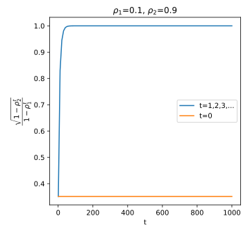
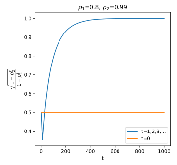
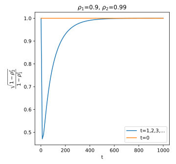
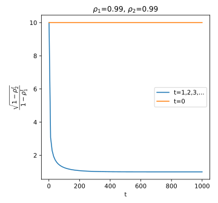
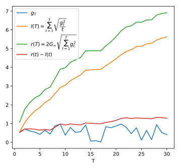
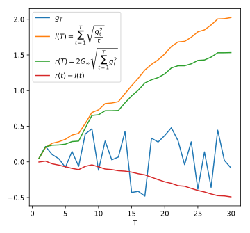

Note on May 16, 2019
| Date: | May 16, 2019 |
|---|---|
| Last Updated: | May 20, 2019 |
| Categories: | |
| Tags: |

Contents
Introduction
First, let us introduce Adam which is an important first-order gradient descent algorithm for updating the weights in neural network. A brief introduction in Chinese could be referred here.
The whole name of ADAM is “adaptive moment estimation”, which means it is a combination of adaptive learning rate and momentum estimation. In this article, we would discuss the theory and proof in the following paper:
In this article, we would discuss some proofs about the features of this algorithm. And we will also show why the proof for the convergence in the original paper is wrong.
Consider that we have a neural network $\mathcal{D}_{\boldsymbol{\Theta}}$ where $\boldsymbol{\Theta}$ represents parameters. To optimize the loss function $\mathcal{L} \left( \mathbf{y}_k,~ \mathcal{D}_{\boldsymbol{\Theta}} (\mathbf{x}_k) \right)$, the algorithm could be described as
- Denotation:
- $T$: iteration number;
- $\epsilon$: learning rate;
- $\delta$: small indefinite amount that is usually 1e-8;
- $\rho_1,~\rho_2$: two decay rate;
- $\mathbf{s}$: momentum which is initialized as $\mathbf{0}$;
- $\mathbf{r}$: adaptive learning rate which is a diagonal matrix $\mathrm{diag}(\mathbf{0})$.
- Then in each iteration $t={1,~2,~3,~\cdots,~T}$, we have
- Pick m samples randomly from a set (or pick those samples in sequence from a randomly shuffled set). We call the m samples $(\mathbf{x}_k,~\mathbf{y}_k)$ as a batch;
- Calculate the gradient $\mathbf{g} = \frac{1}{m} \nabla_{\boldsymbol{\Theta}} \sum\limits_{k=1}^m \mathcal{L} \left( \mathbf{y}_k,~ \mathcal{D}_{\boldsymbol{\Theta}} (\mathbf{x}_k) \right)$;
- Update the momentum by $\mathbf{s} \leftarrow \rho_1 \mathbf{s} + (1 - \rho_1) \mathbf{g}$;
- Update the adaptive learning rate by $\mathbf{r} \leftarrow \rho_2 \mathbf{r} + (1 - \rho_2) \mathrm{diag}(\mathbf{g})^2$;
- Correct the initialization bias by $\hat{\mathbf{s}} \leftarrow \dfrac{\mathbf{s}}{1 - \rho_1^t}$, $\hat{\mathbf{r}} \leftarrow \dfrac{\mathbf{r}}{1 - \rho_2^t}$;
- Update parameters by $\boldsymbol{\Theta} \leftarrow \boldsymbol{\Theta} - \dfrac{ \epsilon }{\delta + \sqrt{\hat{\mathbf{r}}}} \hat{\mathbf{s}}$.
Theory
In this part, we would discuss why Adam is designed like such a workflow. As mentioned, it is a combination of adaptive learning rate and momentum estimation. It could take the advantage of momentum optimization and guide the cumulative gradient skip some local minimum. In the meanwhile, it could also take advantage of the adaptive learning rate, which makes the algorithm invariant of the scale of calculated gradient. As a reference, reader could refer to section 2.1 and section 3 when going through the following discussions.
Boundedness of time step
As mentioned, in step 6, parameters are updated by the time step $\Delta_t = \epsilon \frac{ \hat{\mathbf{s}} }{\sqrt{\hat{\mathbf{r}}}}$, where we omit the small value $\delta$. Hence, we could rewrite the time step with
According to the paper, we divide the $\Delta_t$ into two cases. In the following discussion, we need to note that $\rho_1,~\rho_2 \in (0,~1)$.
To have an intuitive view on the boundary of $|\Delta_t|$, we need to dig into the boundary of $\frac{ \sqrt{1 - \rho_2^t} }{ 1 - \rho_1^t }$ firstly. We have chosen 4 different cases to learn the upper bound of $\frac{ \sqrt{1 - \rho_2^t} }{ 1 - \rho_1^t }$.
| $\sqrt{1 - \rho_2} < 1 - \rho_1$ | $\sqrt{1 - \rho_2} < 1 - \rho_1$ | $\sqrt{1 - \rho_2} = 1 - \rho_1$ | $\sqrt{1 - \rho_2} > 1 - \rho_1$ |
|---|---|---|---|
|  |  |  |  |
From the above tests, we would have such an assumption:
- When $\sqrt{1 - \rho_2} < 1 - \rho_1$, $\frac{ \sqrt{1 - \rho_2^t} }{ 1 - \rho_1^t } < 1$;
- When $\sqrt{1 - \rho_2} = 1 - \rho_1$, $\frac{ \sqrt{1 - \rho_2^t} }{ 1 - \rho_1^t } \leqslant 1$;
- When $\sqrt{1 - \rho_2} > 1 - \rho_1$, $\frac{ \sqrt{1 - \rho_2^t} }{ 1 - \rho_1^t } < \frac{ \sqrt{1 - \rho_2} }{ 1 - \rho_1 }$.
In the following part, we would prove this assumption to be true.
Case 1
In the first case, we have $\sqrt{1 - \rho_2} < 1 - \rho_1$. If we expand this condition, then we will get $\rho_2 > 2 \rho_1 - \rho_1^2$.
Similar, we could derive $\rho_2^t > 2 \rho_1^t - \rho_1^{2t}$ from $\sqrt{1 - \rho_2^t} < 1 - \rho_1^t$. Hence, if we could prove that
Then we could prove the assumption 1. Therefore, check the inequality in the right side of $(2)$, we could divide $\rho_1^t$ in both sides, then we get the equivalent inequality
To prove this inequality, we need to prove a lemma:
Lemma 1
Consider that $t \in \mathbb{Z}^+$, $x \in (0,~1)$, then we have
\begin{align} (2 - x)^t > 2 - x^t. \end{align}
proof:
To prove Lemma 1, we need to use mathematical deduction. First, consider the case of $t=2$, we have
Then, assume that there is $(2 - x)^n > 2 - x^n$, then we would have
Because
we could substitute $(7)$ into $(6)$, and get that
Hence $(4)$ has been proved, and we would prove $(3)$ to be true by Lemma 1. Subsequently, $(2)$ would be proved by $(3)$, which means in the case of $\sqrt{1 - \rho_2} < 1 - \rho_1$, we have
Case 2
Lemma 1 holds for any $x \in (0,~1)$, hence we know $(3)$ is still true for any $t>1$. It will be easy to derive that if $\sqrt{1 - \rho_2} = 1 - \rho_1$, when and only when $t=1$, the equality would hold in the following equation.
Case 3
When $\sqrt{1 - \rho_2} > 1 - \rho_1$, we could get $\rho_2 < 2 \rho_1 - \rho_1^2$ directly. But we want to prove that
In $(11)$ we have rewritten the inequality in the form of the sum of geometric progression. Apparently, $\sum_{i=0}^{t-1} \rho^i$ increases with $\rho$ monotonically. Because $\rho_2 < 2 \rho_1 - \rho_1^2$, we would know that
To prove $(11)$, we need to prove such an inequality that
If we solve the first-order gradient for such a function that
where $t>1$. We would get $f’(x) = t \left( x^{t-1} - (2-x)^{t-1} \right)$, which indicates that the minimal point lies on $x=1$, i.e. $f(x) > 2$ for any $x \in (0,~1)$. Hence we know $(12)$ is fulfilled. Consequently, we would prove $(11)$.
Upper boundary
After finding the upper boundary of the coefficient $\frac{ \sqrt{1 - \rho_2^t} }{ 1 - \rho_1^t }$, we still need to confirm the upper boundary of $\frac{ \mathbf{s} }{\sqrt{\mathbf{r}}}$. Take the initialization into consideration, we would have that
Hence we have
Both the numerator and denominator in $(17)$ are weighted sum, where we view $\mathbf{g}_i$ as a weight. If consider one element, we could rewrite $(17)$ as
There are two extreme cases. In the first one, the gradient is highly sparse, which means most of $g_{ij}$ would be 0. Consider the case when $g_{tj} \neq 0$, we would have
In the other case, the gradient are always in the same distribution, which means
Therefore,
According to $(1)$, we have
Take the aforementioned 3 cases into consideration, we would find that the upper boundary of the time step is
which means
- When $\sqrt{1 - \rho_2} < 1 - \rho_1$, $|\Delta_t| < \epsilon \frac{ 1 - \rho_1 }{ \sqrt{1 - \rho_2} }$;
- When $\sqrt{1 - \rho_2} = 1 - \rho_1$, $|\Delta_t| \leqslant \epsilon$;
- When $\sqrt{1 - \rho_2} > 1 - \rho_1$, $|\Delta_t| < \epsilon$.
Scale invariance of time step
One of the most attractive advantages of Adam is that the time step $|\Delta_t|$ is scale invariant. For example, if all gradients of Adam are enlarged by a coefficient $\alpha$, which means for any $\mathbf{g}_i$, we have $\hat{\mathbf{g}}_i = \alpha \mathbf{g}_i$, then we would have
which means the scale of the gradient (or loss function) does not influence the calculated time step for each iteration. For example, if the gradient is the same for all time step, i.e. $\mathbf{g}_i = \mathbf{g}$, then $\frac{ \mathbf{s} }{\sqrt{ \mathbf{r}}}$ would be a constant which is not relevant to the value of $\mathbf{g}$. By substituting $(17)$ and $(20)$ into $(1)$, we would get the time step $\Delta_t = \epsilon$. The author call the ratio $\frac{ \hat{\mathbf{s}} }{\sqrt{ \hat{\mathbf{r}}}}$ as signal-to-noise ratio (SNR). The author claims that when near to the optimum, the SNR would be small, which helps the Adam change to a smaller learning rate like self-annealing .
Furthermore, we could consider another case where we apply different coefficient $\alpha_i$ to different gradient $\mathbf{g}_i$. Then we would get
We would find that $\alpha_i$ serves as a weight for the gradient in this case. Then we would find another feature of Adam:
During the optimization of Adam, a gradient with a large norm would takes a larger proportion in the calculation for $\Delta_t$, while the upper bound of $\Delta_t$ is well restricted and would not be influence by the norm of gradients.
Correction for initialization bias
In this part, we would answer a question about why we need to apply the step 5 in the algorithm (check the introduction). This step is aimed at correct the initialization bias of the algorithm. Readers may find the same discussion in the section 3 of the paper.
Take the momentum $\mathbf{s}$ as an example. In $(15)$, we have already known that since the initialization of $\mathbf{s}$ is $\mathbf{0}$, it could be represented as
Assume that the residual between two gradients is bounded by $\zeta$, i.e. $\left|\mathbb{E}\left[\mathbf{g}_i\right] - \mathbb{E}\left[\mathbf{g}_t\right] \right|_{\infty} < \zeta$, we would have
The coefficient $(1 - \rho_1^t)$ in $(27)$ is introduced by initializing the momentum with $\mathbf{0}$. What the step 6 does is canceling the influence of the initialization, which means
Such a scheme could be also applied to $\mathbf{r}$ as well. If the distribution of the gradient is stationary, i.e. for any $i$, there is $\mathbb{E}\left[\mathbf{g}_i\right] = \mathbb{E}\left[\mathbf{g}\right]$, then $\zeta=0$. In this case, $\mathbb{E}\left[\hat{\mathbf{s}}\right]$ could serves as an unbiased estimation for $\mathbb{E}\left[\mathbf{g}\right]$. In fact, in practice the $\zeta$ is generally thought to be small.
However, we may need to consider another case where the gradient is highly sparse. In such a case, $\zeta$ may be comparable with $\mathbb{E}\left[\mathbf{g}_t\right]$, which makes the momentum not accurate. To prevent such a case, it may be necessary to apply a small $\rho_1$ to make $\hat{\mathbf{s}}$ more similar to $\mathbf{g}_t$. If we do not make such a initial bias correction, $\mathbf{s}$ may be smaller especially for the initial steps. When the same case happens to $\mathbf{r}$, where $\rho_2$ is small, the too small $\mathbf{r}$ without correction would cause the $\Delta_t$ too large during the initial steps. As a comparison, the author claims that Adam could be self-annealing when applying to sparse gradients.
Proof of convergence
The following part is incomplete. Because we have found that the first Lemma (Lemma 10.3) in the original paper is wrong, which means the following proof is based on false premises. We would not reproduce the wrong proof, instead, we will give an example which shows why Lemma 10.3 is wrong.
In the supplemental material, the author has given the whole proof of the convergence analysis. To prove such an algorithm to be converged, an important technique called “regret analysis” needs to be used. Since I am not familiar with this criteria, in the following part, I would only reproduce the author’s proof.
For any step $t \in {0,~1,~2,~\cdots,~T}$, we have parameters $\theta_t$ for a convex loss function $f_t(\theta_t)$. For different $t$, we use different $\theta_t$ and $f_t(\theta_t)$, because
- The parameters $\theta_t$ would be updated by the algorithm in each iteration;
- In each iteration, we use a different batch to train $\theta_t$. According to the theory stochastic optimization, the target of the loss function would be different, which means we need to use different $f_t(\cdot)$.
Denote the optimum of $\theta_t$ is $\theta^{\ast}$, we could define the regret as
In regret analysis, we need to find the upper bound of $R(T)$, which would be discussed in the following part. To be emphasized, we do not apply norms in $R(T)$. In my idea, this kind of analysis is not like what we do in a general convergence analysis problem where we are required to find the boundary of error, i.e. $\lVert f_t(\theta_t) - f_t(\theta^{\ast}) \rVert < \varepsilon$.
Features of convex function
For any convex function, we have the following features:
Lemma 2
For any $\lambda \in [0,~1]$, a convex scalar function $f: \mathbb{R}^d \rightarrow \mathbb{R}$ could be defined as
\begin{align} \lambda f(x) + (1 - \lambda) f(y) \geqslant f( \lambda x + (1 - \lambda) y ). \end{align}Consider the first order gradient $\nabla f(x)$, we would have
\begin{align} f(y) \geqslant f(x) + \nabla f(x) (y - x). \end{align}There is a conclusion that $(30)$ $\leftrightarrow$ $(31)$. Both of the two equations suggest the “strictly convex” condition. In the following part, $(31)$ would be used to confirm the upper boundary of the regret.
We would not prove Lemma 2 here. Readers who are interested in this criteria could refer to the following reading material
We define the symbols in the following table:
| Symbol | Description |
|---|---|
| $g_t$ | Gradient vector for time step $t$, i.e. $g_t := \nabla f_t (\theta_t)$. |
| $g_{tj}$ | The jth element of $g_t$. |
| $g_{1:t,j}$ | A sub-vector which contains the jth element from 1st to tth samples of $g_t$, i.e. $g_{1:t,j} := \{g_{1j},~g_{2j},~g_{3j},~\cdots,~g_{tj}\}$. |
| $G$ | Upper bound of L2 norm of $g$, i.e. for any $t$, there is $\lVert g_t \rVert_2 \leqslant G$. |
| $G_{\infty}$ | Upper bound of L∞ norm of $g$, i.e. for any $t$, there is $\lVert g_t \rVert_{\infty} \leqslant G_{\infty}$. |
| $D$ | Upper bound of L2 distance between two parameters in any time $m,~n$, i.e. $\lVert \theta_m - \theta_n \rVert_2 \leqslant D$. |
| $D_{\infty}$ | Upper bound of L∞ distance between two parameters in any time $m,~n$, i.e. $\lVert \theta_m - \theta_n \rVert_{\infty} \leqslant D_{\infty}$. |
Upper bound of time step
Lemma 3
Prove that
\begin{align} \sum_{t=1}^T \sqrt{\frac{g_{tj}^2}{t}} \leqslant 2 G_{\infty} \lVert g_{1:T,j} \rVert_2. \end{align}
This lemma is wrong. Although the original paper gives a proof, that proof is not correct due to a typo. However, it is not reasonable to fix the proof because $(32)$ is not true. To examine the inequality in $(32)$, we write such codes:
import numpy as np
import random
import matplotlib.pyplot as plt
# Prepare the libs
random.seed(10)
np.random.seed(0)
T = 30 # Define the iteration number as 30.
xx = np.linspace(1,T,T) # X axis
g = np.random.rand(T) - 0.5 # Use random variables as gradient in each iteration.
Gi = np.amax(np.abs(g)) # Calculate the L-infinity norm.
xl = np.cumsum(np.sqrt(g**2 / xx)) # Left side of the inequality.
xr = 2 * Gi * np.sqrt(np.cumsum(g**2)) # Right side of the inequality.
plt.xlabel('T')
plt.plot(xx, g, label='$g_T$')
plt.plot(xx, xl, label=r'$l(T) = \sum_{t=1}^T \sqrt{\dfrac{g^2_t}{t}}$')
plt.plot(xx, xr, label=r'$r(T) = 2 G_{\infty} \sqrt{\sum_{t=1}^T g^2_t}$')
plt.plot(xx, xr-xl, label=r'$r(t) - l(t)$') # Should be always >0 if Lemma is true.
plt.legend()
plt.gcf().set_size_inches(5, 5), plt.tight_layout(), plt.show()
| An example | An counterexample |
|---|---|
|  |  |
In the above two graphs, the orange line represents the left side in $(32)$, while the green line represents the right side in $(32)$. Therefore, if Lemma 3 is true, the difference, i.e. the red line should be always $>0$. In left example, we make $g_{tj} \sim U(0,~1)$. In this case, the Lemma 3 seems to be true. However, if we change the gradients to $g_{tj} \sim U(-0.5,~0.5)$, we would get the right example, which is a counterexample of Lemma 3.
In practice, since we are using stochastic algorithm (including Adam), it is rational to assume that the gradient could be either negative or positive. As we have such a counterexample, we would know that Lemma 3 shows a wrong inequality.
This error is a disaster, because the theorem about convergence in the original paper is proof on the basis of Lemma 3. As Lemma 3 is wrong, there is unnecessary to learn the proof for the convergence. As a conclusion, it is not worth of learning more from this paper.
In original paper, a part of the author’s proof is as below
proof:
To prove it, we need to apply the mathematical deduction.
First, consider the case of $t=1$, because $\lVert g_{1:1,j} \rVert_2 = \sqrt{\frac{g_{1j}^2}{1}}$. Then we know that when $2G_{\infty} \geqslant 1$ , there will be $\sqrt{\frac{g_{1j}^2}{1}} \leqslant 2 G_{\infty} \lVert g_{1:1,j} \rVert_2$.
Assume that
\begin{equation} \begin{aligned} \sum_{t=1}^{T+1} \sqrt{\frac{g_{tj}^2}{t}} &= \sum_{t=1}^T \sqrt{\frac{g_{tj}^2}{t}} + \sqrt{\frac{g_{(T+1)j}^2}{T+1}} \leqslant 2 G_{\infty} \lVert g_{1:T,j} \rVert_2 + \sqrt{\frac{g_{(T+1)j}^2}{T+1}} \\ &= 2 G_{\infty} \sqrt{\lVert g_{1:(T+1),j} \rVert_2^2 - g_{(T+1)j}^2} + \sqrt{\frac{g_{(T+1)j}^2}{T+1}} \end{aligned} \end{equation}According to $a^2 - b^2 \leqslant a^2 - b^2 + \frac{b^4}{4a^2} = \left(a - \frac{b^2}{2 a}\right)$,
\begin{equation} \begin{aligned} \sqrt{\lVert g_{1:(T+1),j} \rVert_2^2 - g_{(T+1)j}^2} &\leqslant \lVert g_{1:(T+1),j} \rVert_2 - \frac{g_{(T+1)j}^2}{2 \lVert g_{1:(T+1),j} \rVert_2} \\ &\leqslant \lVert g_{1:(T+1),j} \rVert_2 - \frac{g_{(T+1)j}^2}{2 \sqrt{(T+1)G_{\infty}^2}}. \end{aligned} \end{equation}From $(34)$ we would get
\begin{align} 2 G_{\infty} \sqrt{\lVert g_{1:(T+1),j} \rVert_2^2 - g_{(T+1)j}^2} + \sqrt{\frac{g_{(T+1)j}^2}{T+1}} \leqslant 2 G_{\infty} \lVert g_{1:(T+1),j} \rVert_2 - \frac{g_{(T+1)j}^2}{\sqrt{T+1}} + \sqrt{\frac{g_{(T+1)j}^2}{T+1}}. \end{align}Since the author mistake $g_{(T+1)j}^2$ by $\sqrt{g_{(T+1)j}^2}$, the proof is wrong.